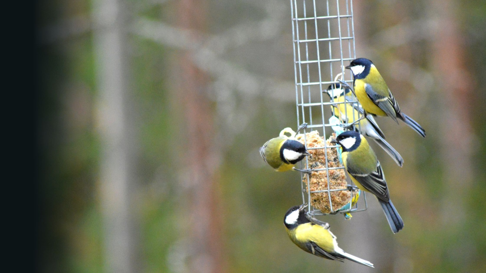
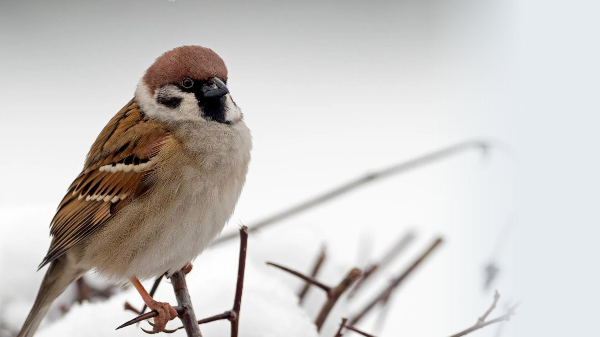
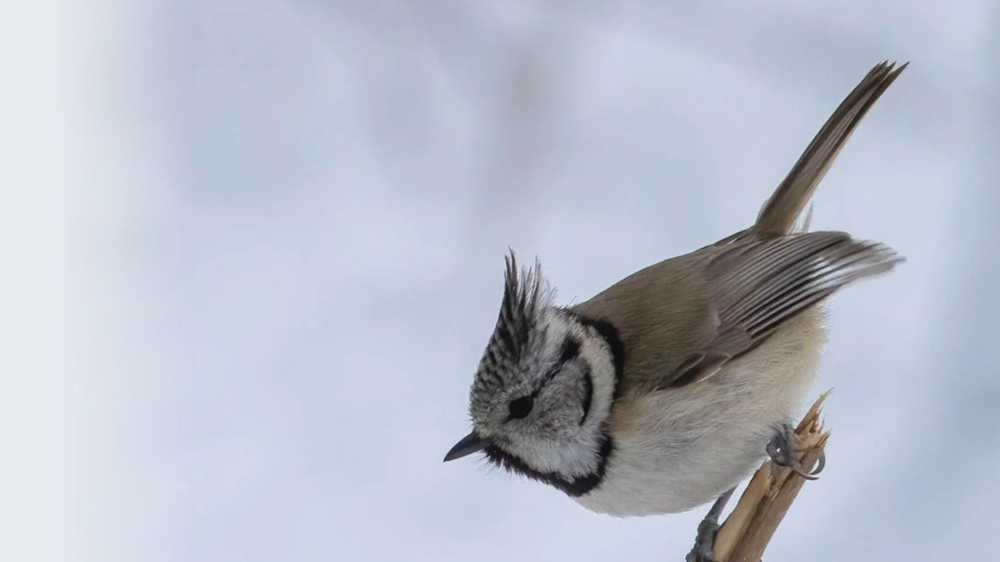

Why BirdAI matters
Birds tell us how nature is doing
Birds are a bioindicator species. They react quickly and predictably when their surroundings change, so a change in the birds is an early sign of a change in the nature around them.
- CountMost birds of each species seen at once
- TrendThe same count, winter after winter
- IndexMany sites combined into a bird indicator
- DecisionLand-use and conservation policy
Great tit · talitiainen

How it works
A feeder that counts its own visitors
- 1
WatchesA camera under the roof photographs the feeding tray every 5 seconds.
- 2
CountsA small AI model on the Arduino UNO Q names and counts each bird at the feeder itself, in about half a second. No internet needed.
- 3
ProtectsWhen a squirrel shows up, a latch closes the feeder. It opens again once the squirrel has left.
3D animation of the latch
Tree sparrow · pikkuvarpunen · Photo: Micha Fager

The gap we fill
Winter is the blind spot
- −41%
- Farmland birds in the EU since 1990
- 80%+
- of bird indicators use breeding-season data only
- 200+
- Finnish winter feeding stations, each counted by hand by a volunteer
A volunteer counts when they have time. BirdAI counts every daylight hour.
Sources: Eurostat 2026 · Fraixedas et al. 2020, Ecological Indicators · Luomus feeding-station monitoring
Crested tit · töyhtötiainen · Photo: Petri Vainio